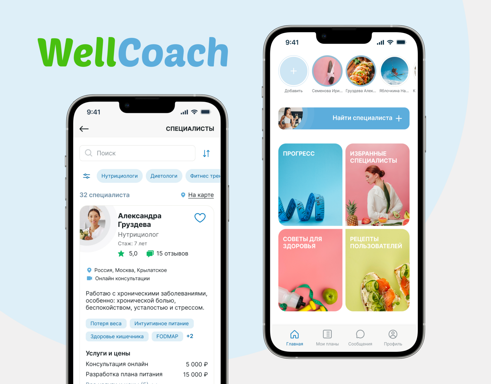
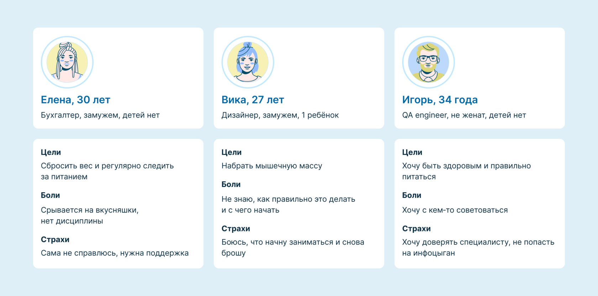
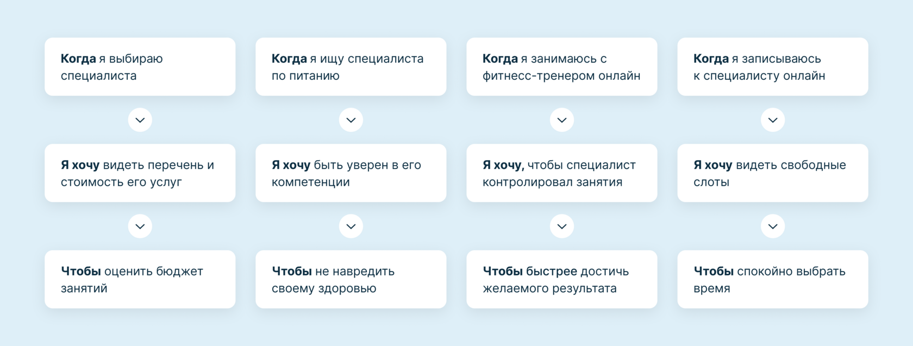
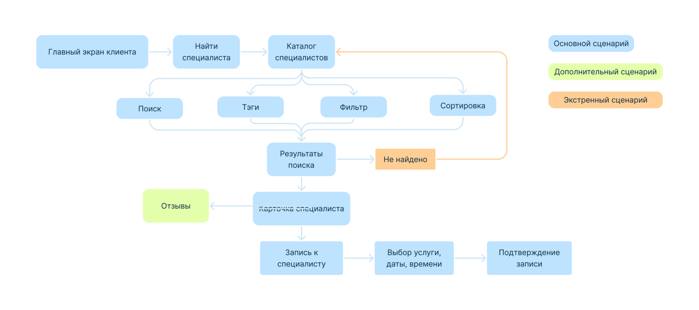
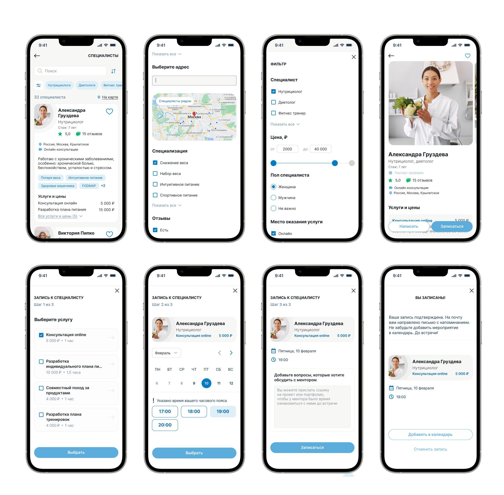

Контекст задачи
Сервис WellCoach предназначен для тех, кто хочет регулярно и успешно заботиться о своём здоровье. Здесь можно найти специалиста в области здорового питания и фитнеса, а также следить за своим прогрессом. В рамках разработки веб-приложения стояла задача сделать каталог специалистов в области питания с возможностью поиска и записи на консультацию.
Также сделать сервис удобным для специалистов, чтобы они могли выполнять все действия (связь с клиентом, хранение и обработка записей о клиенте, общение с коллегами и тд). Проектирование сервиса строилось исходя из принципа Mobile First.
Исследования
Цель
Найти удобные решения, которые позволяют людям регулярно заботиться о своем здоровье
Метод исследования
- Глубинные интервью с клиентами и специалистами
- Исследования рынка похожих сервисов и уведомлений
Анализ целевой аудитории

Анализ конкурентов
Проанализировано 5 сервисов в сфере фитнеса и здорового питания (Adidas running, Fitstars, FatSecret, Down Dog, Беговой трекер), в результате чего получены инсайты:
- Нужно предоставлять более полную информацию о специалисте (образование, опыт, примеры учеников)
- Информация о стоимости услуг должна быть открыта
- Наличие полного описания услуг
- Должна быть качественная фотография специалиста
- Нужна поддержка со стороны специалиста (выбор специалиста под свои запросы, возможность быть на связи со специалистом)
Job Stories

Сценарий записи к специалисту

Результаты исследований
В ходе исследований я поняла, что хочет бизнес в лице специалистов и что хотят клиенты
Специалисты хотят
- Удобную площадку для размещения своих услуг
- Общаться с клиентами в одном месте (в настоящее время это различные мессенджеры, где мешаются жизнь и работа)
- Вести карточку клиента и видеть его прогресс
Клиенты хотят
- Выбирать специалиста имея перед глазами открытую информацию об услугах, их стоимости, профессиональной деятельности, отзывы и тд
- Общаться со специалистом онлайн в случае необходимости
Итоговый дизайн
Спроектирован дизайн записи с возможностью выбора специалиста под свои запросы

Итоги
Было проведено много работы по разработке других сценариев приложения, но к сожалению проект остался проектом из-за отсутствия финансирования